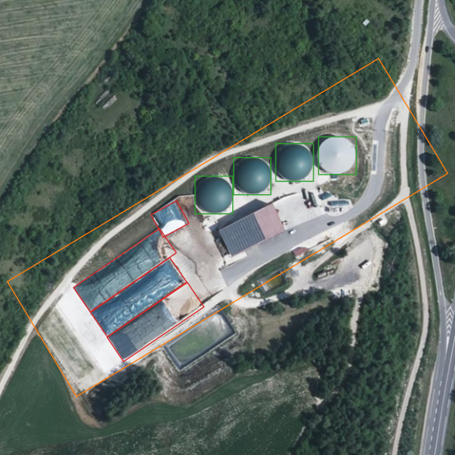
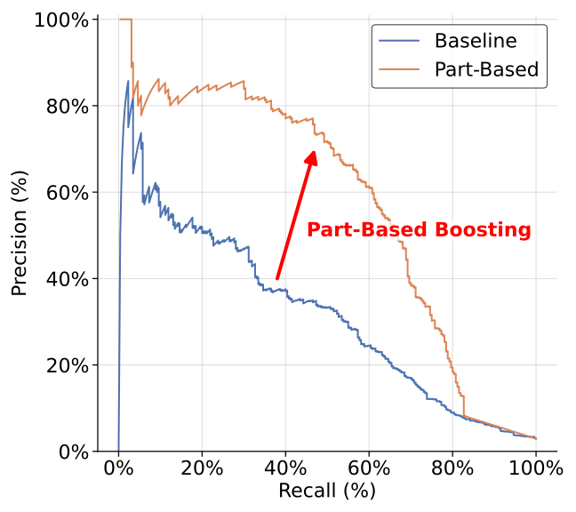

Overview of our results in the French Grand Est region with the number of detected bio-digester sites in each department in 2023.
We use our model to detect unknown bio-digester sites in large areas. On the right, we show (a) some examples of annotated bio-digester sites (from the validation set) with their sub-elements. (b) Shows predictions from our model; even with detection errors and a small training set, the part-based detector reliably identifies bio-digester sites at scale.
Abstract
Object detection is one of the main applications of computer vision in remote sensing imagery. Despite its increasing availability, the sheer volume of remote sensing data poses a challenge when detecting rare objects across large geographic areas. Paradoxically, this common challenge is crucial to many applications, such as estimating environmental impact of certain human activities at scale. In this paper, we propose to address the problem by investigating the methane production and emissions of bio-digesters in France. We first introduce a novel dataset containing bio-digesters, with small training and validation sets, and a large test set with a high imbalance towards observations without objects since such sites are rare. We develop a part-based method that considers essential bio-digester sub-elements to boost initial detections. To this end, we apply our method to new, unseen regions to build an inventory of bio-digesters. We then compute geostatistical estimates of the quantity of methane produced that can be attributed to these infrastructures in a given area at a given time.
Dataset

To the best of our knowledge, we release the first large-scale satellite dataset of bio-digesters, including facility and part annotations. Our dataset comprises high-resolution aerial and satellite imagery of bio-digester sites within France’s Grand Est region across different sources (Aerial and SPOT). Ground truth labels are provided as geolocated segmentation annotations. For each bio-digester, we annotated three different classes: the whole bio-digester installation, the (anaerobic) digestion tanks, and biomass piles (feedstock storage areas). The latter two are smaller structures within bio-digester sites and are crucial for confirming site presence. For large-scale evaluation, a test split covers images of the entire French department of Marne, containing 21 known sites.
Proposed framework. The initially annotated dataset is used to train a conventional object detector network. Then, we apply a part-based statistical method to boost detection performance, making large-scale detection bearable. Subsequently, an iterative process takes place, where the trained detector is applied over larger, diverse regions and the top K detections are manually verified and introduced to the dataset. The same process is then conducted with the resulting larger dataset.
1. Part-Based Boosting

Precision-Recall curves for different detection methods over all the Grand Est region. The probabilistic part-based method (orange) significantly boosts performance.
Humans naturally identify fine-grained objects like biodigesters by first spotting potential candidates, then confirming them by checking for characteristic parts—such as tanks and piles. Following this intuition, we define the detection confidence based on the presence of these parts within the detected bio-digester.
2. Iterative Refinement
With only a limited annotation starting point and vast unlabeled territory, bio-digester detection models suffer from high false positive rates, since digesters show visual similarity to industrial zones, oil storage areas, or farms. Hard negative mining tackles this by identifying high-confidence false positive detections via human inspection and adding these hard examples back into the training set.
Iteration
mAP₅₀
Site
Pile
Tank
#BG
α
0
0.26
0.52
0.11
0.14
163
50 %
1
0.29
0.66
0.06
0.16
263
38 %
2
0.59
0.76
0.14
0.86
363
31 %
Hard Negative Mining validation performance across iterations. Conducting three iterations (including the initial training) using this “teach what not to detect” strategy yields a detector that is markedly more robust to difficult observations and significantly reduces false alarms.
Hard negative examples across three training iterations.
At iteration 0, samples are randomly drawn from the Grand-Est region.
A. de Senneville, X. Bou, T. Ehret, N. Dumelie, C. Abdallah, T. Lauvaux, and G. Facciolo Towards Large Scale Geostatistical Methane Monitoring with Part-based Object Detection
(hosted on ArXiv)